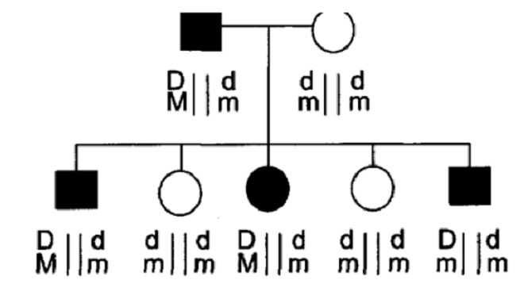

Suppose the genetic distance is d Morgan between two loci (i.e. average d crossovers will occur per meiosis). Infer recombination probability θ between the two loci per meiosis (i.e. the map function, θ(d)) (Score 20)
x: number of observed crossovers
d: genetic distance between two loci
θ(d): prob of recombination between two loci per meiosis
\(f(X = x) = \frac{e^{-d}d^x}{x!},x = 0,1,2,..\)
\(\theta(d) = \sum_{odd x}f(X=x)\)
\(= \sum_{oddx}\frac{e^{-d}d^x}{x!}\)
\(= \frac{1}{2}(\sum_{oddx}\frac{e^{-d}d^x}{x!} + \sum_{oddx}\frac{e^{-d}d^x}{x!} + \sum_{evenx}\frac{e^{-d}d^x}{x!} - \sum_{evenx}\frac{e^{-d}d^x}{x!})\)
\(= \frac{e^{-d}}{2}(\sum_{oddx}\frac{d^x}{x!}+(\sum_{oddx}\frac{d^x}{x!}+\sum_{evenx}\frac{d^x}{x!})-\sum_{evenx}\frac{d^x}{x!})\)
\(= \frac{e^{-d}}{2}(-\sum_{oddx}\frac{(-d)^x}{x!} + \sum_{x=0}^\infty\frac{d^x}{x!} - \sum_{evenx}\frac{(-d)^x}{x!})\)
\(= \frac{e^{-d}}{2}(\sum_{x=0}^\infty\frac{d^x}{x!}-(\sum_{oddx}\frac{(-d)^x}{x!} + \sum_{evenx}\frac{(-d)^x}{x!}))\)
\(= \frac{e^{-d}}{2}(\sum_{x=0}^\infty\frac{d^x}{x!} - \sum_{x=0}^\infty\frac{(-d)^x}{x!})\)
Based on Taylor Series
\(e^d = \sum_{x=0}^\infty\frac{d^x}{x!}, x = 0,1,2,...\)
\(e^{-d} = \sum_{x=0}^\infty\frac{(-d)^x}{x!}\)
Hence,
\(\theta(d) = \frac{e^{-d}}{2}(e^d - e^{-d}) = \frac{1-e^{-2d}}{2}\)
Suppose the recombinatin probability between two loci is θ. (Score 20)
a. If parent genotype for the two loci is dm|Dm, what are transmitted haplotypes and their probabilities?
transmitted haplotypes: dm, Dm
Pr(dm) = Pr(Dm) = 0.5
b. If parent genotype for the two loci is Dm|DM, what are transmitted haplotypes and their probabilities?
transmitted haplotypes: Dm, DM
Pr(Dm) = Pr(DM) = 0.5
c. If parent genotype for the two loci is dm|DM, what are transmitted haplotypes and their probabilities?
transmitted haplotypes: dm, DM, dM, Dm
Pr(dm) = Pr(DM) = \(\frac{1-\theta}{2}\)
Pr(dM) = Pr(Dm) = \(\frac{\theta}{2}\)
d. If parent genotype for the two loci is dM|Dm, what are transmitted haplotypes and their probabilities?
transmitted haplotypes: dM, Dm, dm, DM
Pr(dM) = Pr(Dm) = \(\frac{1-\theta}{2}\)
Pr(dm) = Pr(DM) = \(\frac{\theta}{2}\)
Suppose a family pedigree is as follows. (Score 35)

a. What are recombinant haplotypes?
Dm
b. What are non-recombinant haplotypes?
DM, dm
c. Estimate recombination probability θ and what is the standard error?
\(n = 5, r = 1, s = 4\)
\(\theta = \frac{1}{5} = 0.2\)
\(se = \sqrt{\frac{rs}{n^3}} = \sqrt{\frac{4}{125}}=0.179\)
d. We want to test if there is independent assortment between the two loci. What is the \(H_0\) and \(H_1\)?
\(H_0\) : \(\theta = 0.5\)
\(H_1\) : \(\theta \leq 0.5\)
e. Conduct a statistical test of question d, and show your conclusion. (Hint: binomial test)
binom.test(x=1,n=5,p=0.5,alternative=c("less"),conf.level=0.95)##
## Exact binomial test
##
## data: 1 and 5
## number of successes = 1, number of trials = 5, p-value = 0.1875
## alternative hypothesis: true probability of success is less than 0.5
## 95 percent confidence interval:
## 0.0000000 0.6574083
## sample estimates:
## probability of success
## 0.2The p-value for our test is 0.1875 which is greater than 0.05, so we failed to reject the null hypotheis and conclude that \(\theta = 0.5\) whcih means there is independent assortment between the two loci.
f. Extra Credit (Score 5): Suppose we do not know father’s genotype in the pedigree. Can we infer the father’s genotype with haplotype information and what are they?
Yes, we can. Offspring’s genotypes contain allele D/d and allele M/m, so, father’s genotype must contain D,d,M,m.
And among offspring, there are three types of haplotypes came from father, they are DM, dm and Dm.
Hence, father’s genotype should be informative, and there are two possiable genotypes for father.
1. DM|dm 2. Dm|dM
Weather report shows that snowing probability on Friday is 60%. Big data analysis indicates that the probability of UMMC cancelling class is 70% if there is snow, and the probability is 5% if there is no snow. (Score: 15)
a. Construct the contingency table of probability (Score: 5)
\(Pr(snow) = 0.6\)
\(Pr(no-snow) = 0.4\)
\(Pr(cancel | snow) = 0.7\)
\(Pr(cancel | no-snow) = 0.05\)
\(Pr(snow, cancel) = Pr(cancel | snow)Pr(snow) = 0.7*0.6 = 0.42\)
\(Pr(snow, no-cancel) = Pr(snow) - Pr(snow, cancel) = 0.6 - 0.42 = 0.18\)
\(Pr(no-snow, cancel) = Pr(cancel | no-snow)Pr(no-snow) = 0.05*0.4 = 0.02\)
\(Pr(no-snow, no-cancel) = Pr(no-snow) - Pr(no-snow, cancel) = 0.4 - 0.02 = 0.38\)
| ~~~~~ | cancel | no-cancel | ~~~~~ |
|---|---|---|---|
| snow | 0.42 | 0.18 | 0.6 |
| no-snow | 0.02 | 0.38 | 0.4 |
| ~~~~~ | 0.44 | 0.56 | 1 |
b. What is the probability that class will be cancelled on Friday? (Score: 5)
Pr(cancel) = Pr(cancel, snow) + Pr(cancel, no-snow) = 0.42 + 0.02 = 0.44
c. What is the probability that there is snow on Friday if class is canceled? (Score: 5)
\(Pr(snow | cancel) = \frac{Pr(snow,cancel)}{Pr(cancel)} = \frac{0.42}{0.44} = 0.955\)
A prospective study collected 100 smokers and 100 non-smokers. After 10 years, the study observed 30 smokers and 10 non-smokers got lung cancer. If our objective is that smoking is associated with cancer risk, then
a. Write down the hypothesis and estimate the parameters for hypothesis test (Score: 10)
\(H_0\) : Pr(cancer, smoker) = Pr(cancer, non-smoker)
\(H_a\) : Pr(cancer, smoker) \(\neq\) Pr(cancer, non-smoker)
\(Pr(cancer,smoker) = \frac{30}{100} = 0.3\)
\(Pr(cancer,non-smoker) = \frac{10}{100} = 0.1\)
b. perform a statistical test, get the statistic with p-value and show your conclusion (Score: 10)
| ~~~~~ | cancer | no-cancer | ~~~~~ |
|---|---|---|---|
| smoker | 30 | 70 | 100 |
| non-smoker | 10 | 90 | 100 |
| ~~~~~ | 40 | 160 | 200 |
\(\hat{p_1} = 0.3, x_1 = 30, n_1 = 100\)
\(\hat{p_2} = 0.1, x_2 = 10, n_2 = 100\)
\(\bar{p} = \frac{x_1 + x_2}{n_1 + n_2} = \frac{40}{200} = 0.2\)
\(\hat{\sigma}_{\hat{p_1} - \hat{p_2}} = \sqrt{\frac{\bar{p}(1-\bar{p})}{n_1} + \frac{\bar{p}(1-\bar{p})}{n_2}}\)
$ = = 0.0566$
\(z = \frac{\hat{p_1} - \hat{p_2}}{\hat{\sigma}_{\hat{p_1} - \hat{p_2}}} = \frac{0.3-0.1}{0.0566} = 3.54\)
The P-Value is .0004.
Because our p-value is 0.0004 which is less than 0 at 0.05 alpha level, we reject the null hypothesis and conclude that smoking is associated with cancer risk.